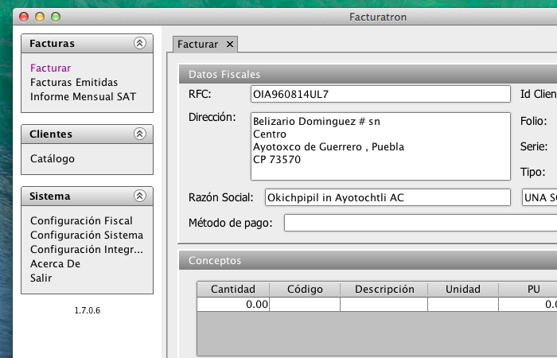

Las características de Facturatron incluyen:
- Generación de CFDIs versión 3.2
- Produce los archivos PDF y XML requeridos por el SAT
- Logotipo del comprobante fácilmente intercambiable
- Edición total de la plantilla de los comprobantes
- Actualizaciones críticas contínuas y gratuitas
- Catálogo de clientes
- Buscador de clientes en el editor de comprobantes
- Listado de facturas emitidas, entre sus funciones se encuentran: mostrar PDFs generados y cancelar comprobantes.
- Multi-PAC: Es posible cambiar el PAC con el que se timbrará el comprobante
- Se pueden solicitar o programar nuevos conectores a PACs
- PACs soportados actualmente: Finkok y Facturainteligente
- Importación de tickets y generación de factura global desde sistemas de punto de venta mediante los conectores a orígenes de datos
- Los conectores a orígenes de datos también se pueden solicitar o programar
- Conectores disponibles: OpenTPV / OpenBravo POS / iTPV, Omoikane POS
- Servicios avanzados de soporte profesional
- Open Source: Utilizalo para cualquier proyecto, privado o comercial